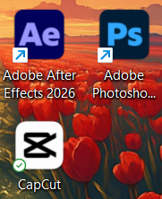
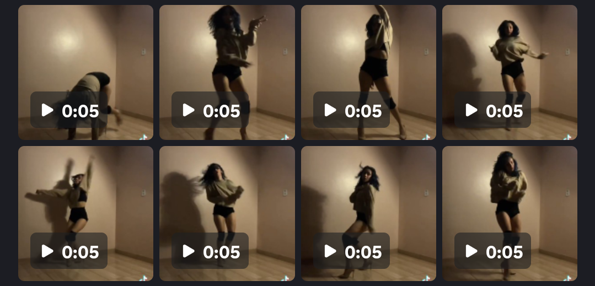
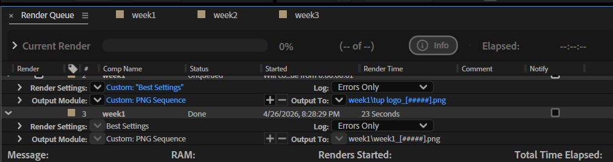
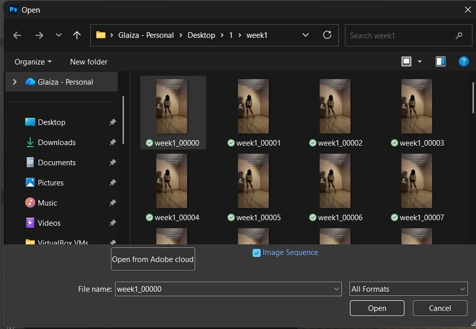
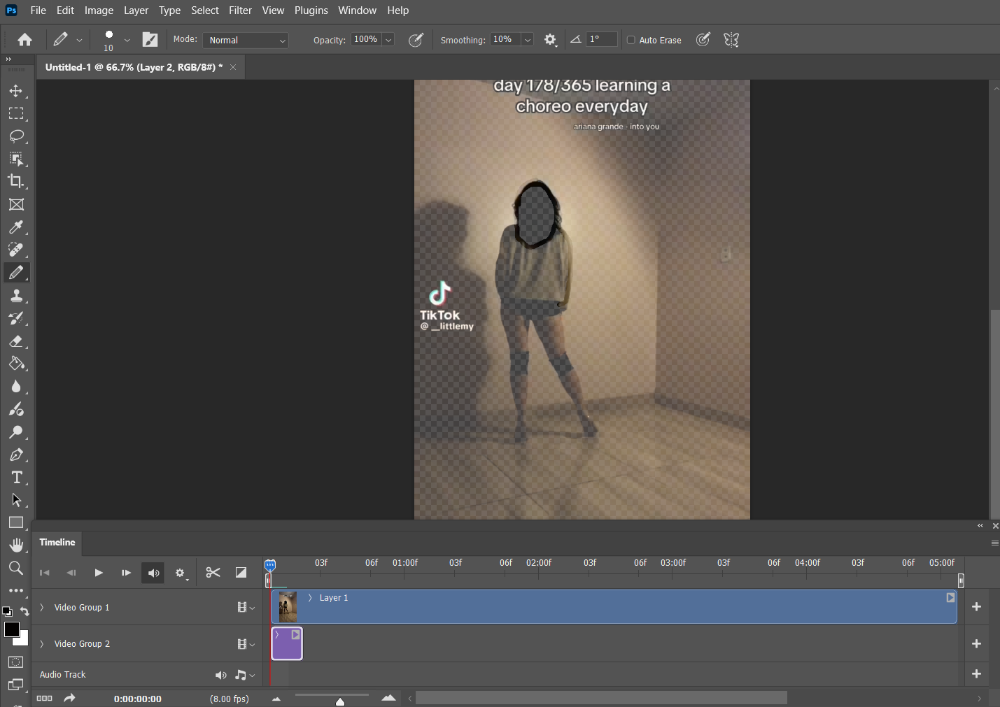

Final Output
The completed rotoscoping animation — the culmination of 12 weeks of frame-by-frame tracing, color work, and compositing.
.
Step-by-Step Tutorial
A visual walkthrough of the rotoscoping process. Each step below shows a photo of the actual screen/action at that stage.

Prepare the Applications
Set up Adobe After Effects and Photoshop...

Split the Video into 5-Second Clips
Cut your reference footage into manageable 5-second segments so each week covers one clip.

After Effects — Export via Render Queue
Import clips into After Effects. Go to Composition → Add to Render Queue.

Import Rendered Frames into Photoshop
Open Photoshop → File → Open → select first frame → check "Image Sequence" → set FPS → open. Each frame is now a layer.

Edit the Rendered Frames
Trace and color each frame in Photoshop. Use the brush tool, paint bucket, and layer masks to build up the rotoscoped animation.
Weekly Progress
Each module below represents one 5-second clip of the rotoscoping project. Week 1 includes the progress video — remaining weeks show photo documentation.
Clip 1 — 0:00–0:05
First 5-second segment rendered from After Effects and edited frame by frame in Photoshop.